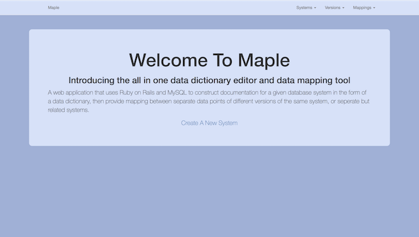
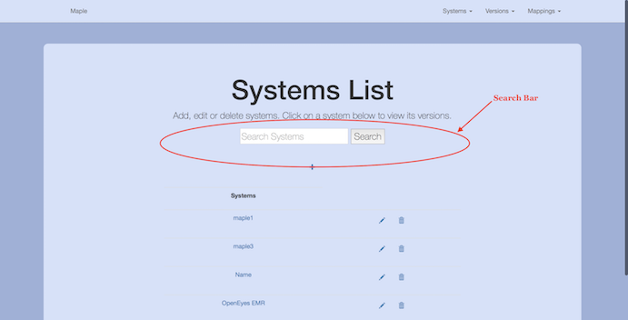
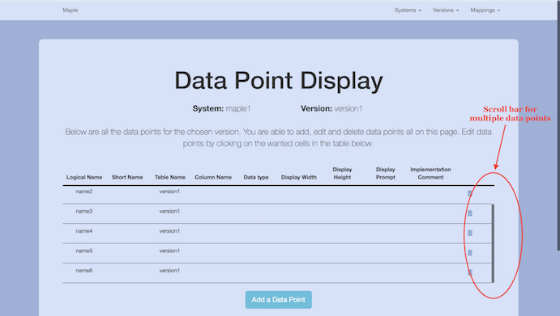
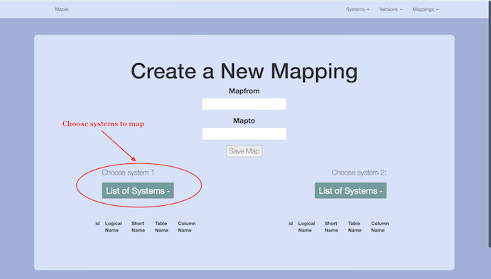
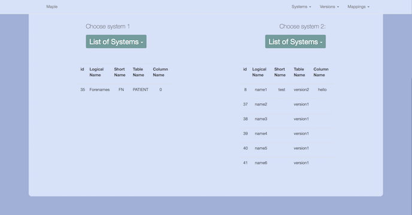
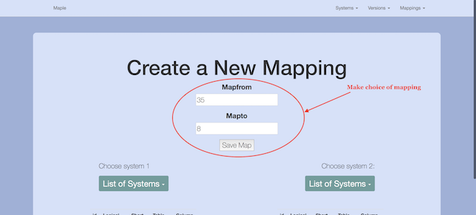
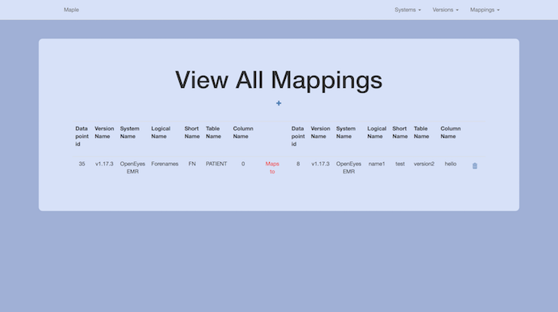
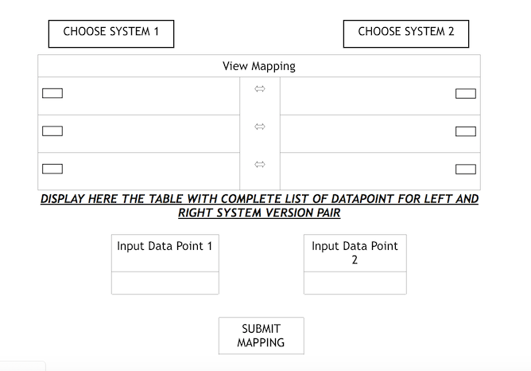

Fourth Iteration
After gathering feedback from our client regarding our third iteration, we spent time implementing the changes that he requested. Our fourth iteration was the first that handled mapping and was the most complete final version of the project so far. The fourth iteration fulfills the following requirements:
- RQ1: The application must be a data dictionary editor
- RQ2: The application must be able to create a data dictionary (logical and physical) for the required system e.g. for a customer system or for a payroll system
- RQ4: The application should ensure that the data dictionaries can handle the versioning of systems
- RQ5: The application should ensure that the data dictionary items can be mapped to other items of another system or version
- RQ8: The application should be able to compare data models
- RQ10: The application should allow a data dictionary to be mapped to other data dictionaries
- RQ11: The application must have a screen for loading data dictionaries
- RQ12: The application must have a screen that enables the maintenance of a single data dictionary (adding and removal of columns)
- RQ13: The application must have a screen for loading data
- RQ14: The application must have a screen that gives access to the default mapping tool
- RQ15: The application must accept systems and data dictionaries as its data (content for the application)
- RQ16: The application must define a data model for our data dictionary
- RQ17: The data dictionary should have have the ability to be augmented (can grow in size)

We updated our home page to include some information about what the product is and added some styling in order to make it more presentable.

We added a search bar so that the systems within the application could be searched, meaning that less time would need to be spend manually looking through all the systems. This was achieved by using a search method within rails and checking our systems table for matches with the search criteria.

Using JavaScript we added scroll bar functionality to the data points table to avoid the problem of having a very long page when a version has lots of data points.

The main focus of our fourth iteration was mapping. On the "Create Mappings" page we had two drop downs which allowed the user to choose which system and version they would like to map.

Once the user had chosen their version to map, it would be displayed below as shown in the screenshot. This was done by passing their choice as a parameter between different pages under the bonnet. This allowed us to "store" both choices that the user made before displaying them on the same page as shown above.

We then added the functionality that allowed a user to choose a specific set of data points which they could map. This was done by entering in the id of each set of datapoints which is displayed on the same page (as in screenshot above). This then saved that particular mapping.

Finally, the mappings could be viewed on the "Show Mappings" page. This shows all of the saved mappings made by users.
Client Feedback
Once we were satisfied with our fourth iteration, we had another meeting with our client in order to get his feedback and note any changes he would like. The results of the meeting were the following:
- In the data points display, add another column that shows data point status as a dropdown - i.e. active, removed and deprecated
- For the popup used to create data point there should be an option to add table name
- The data type option within the data point entry should be a dropdown consisting of three options - text, number and date
- Add shortcut buttons on the home page
- Above the table of all data points, display all the ma the existing mappings between the two system version pairs selected
- Display the system name and version name chosen for the left and right hand side. Hence you can remove the columns with system name and version name
- On the page creating a new mapping, display the table of data points above the form submission
The client decided that the mapping section should be redesigned and so we came up with the following new designs that we would try and complete. We noted that we were running out of time and so would make all of the changes possible in the time left.
